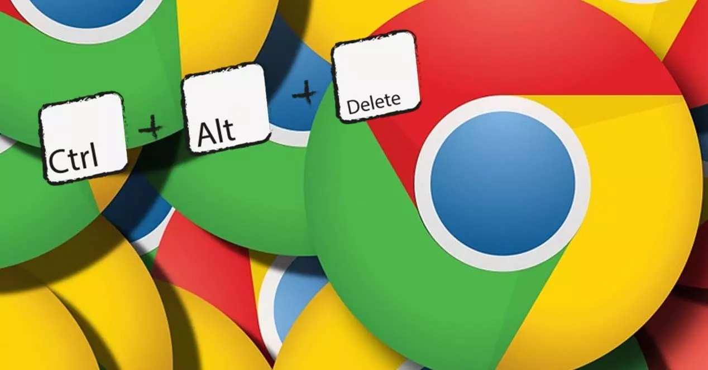

Todos los atajos de teclado de Google Chrome en Windows, Linux y Mac
Cuando se navega por Internet desde el ordenador, la mayoría de usuarios prefieren no soltar la mano del ratón y usar el teclado únicamente cuando no les quede más remedio. Sin embargo, son otros muchos los que hacen justo lo contrario, ya que en ocasiones es posible acceder a cualquier función o ajuste de nuestro navegador con un simple atajo de teclado de manera más rápida que con el propio ratón. Teniendo en cuenta que el navegador más utilizado es el de Google, vamos a mostrar a continuación todos los atajos de teclado que nos servirán de gran ayuda mientras navegamos en Chrome desde Windows, Linux o macOS. Los atajos de teclado son muy útiles cuando queremos mejorar nuestra productividad, ya que nos permiten ejecutar ciertas acciones sin necesidad de levantar las manos del teclado y por lo tanto, resulta mucho más rápido que tener que andar realizando varios clics con el ratón hasta llegar a la opción deseada.
Los atajos de teclado son muy útiles cuando queremos mejorar nuestra productividad, ya que nos permiten ejecutar ciertas acciones sin necesidad de levantar las manos del teclado y por lo tanto, resulta mucho más rápido que tener que andar realizando varios clics con el ratón hasta llegar a la opción deseada.
Combinaciones de teclas de pestañas y ventanas
Cuando abrimos una ventana de Chrome o varias pestañas, hay ciertas combinaciones de teclas que nos permiten movernos entre ellas, abrir una nueva pestaña, ir a la siguiente o anterior, maximizar o minimizar la ventaja o incluso abrir una nueva en modo incógnito, entre otras cosas. Para todo ello, estos son los atajos de teclado que debemos utilizar:
| # | Opción | Comando |
|---|---|---|
| 1 | Abrir una ventana nueva | Control + N |
| 2 | Abrir una ventana nueva en modo incógnito | Ctrl + Mayús + N |
| 3 | Abrir una pestaña nueva y acceder a ella | Ctrl + T |
| 4 | Volver a abrir las pestañas cerradas anteriormente en el orden en que se cerraron | Ctrl + Mayús + T |
| 5 | Ir a la siguiente pestaña abierta | Ctrl + Tabulador o Ctrl + AvPág |
| 6 | Ir a la pestaña abierta anterior | Ctrl + Mayús + Tabulador o Ctrl + RePág |
| 7 | Ir a una pestaña específica | Ctrl + 1 a Ctrl + 8 |
| 8 | Ir a la pestaña más a la derecha | Ctrl + 9 |
| 9 | Abrir tu página principal en la pestaña actual | Alt + Inicio |
| 10 | Abrir la página anterior del historial de navegación en la pestaña actual | Alt + Flecha hacia la izquierda |
| 11 | Abrir la siguiente página del historial de navegación en la pestaña actual | Alt + Flecha hacia la derecha |
| 12 | Abrir el administrador de tareas de Chrome | Mayús + Esc |
| 13 | Centrarse en el primer elemento de la barra de herramientas de Chrome | Mayús + Alt + T |
| 14 | Cerrar la pestaña actual | Ctrl + W o Ctrl + F4 |
| 15 | Cerrar la ventana actual | Ctrl + Mayús + W o Alt + F4 |
| 16 | Minimizar la ventana actual | Alt + Espacio y, a continuación, N |
| 17 | Maximizar la ventana actual | Alt + Espacio y, a continuación, X |
| 18 | Salir de Google Chrome | Alt + F y, a continuación, X |
| 19 | Abrir el menú de Chrome | Alt + F o Alt + E |
| 20 | Mostrar u ocultar la barra de marcadores | Ctrl + Mayús + B |
| 21 | Mostrar u ocultar la barra de marcadores | Ctrl + Mayús + O |
| 22 | Abrir la página Historial en una pestaña nueva | Ctrl + H |
| 23 | Abrir la página Descargas en una pestaña nueva | Ctrl + J |
Siguenos